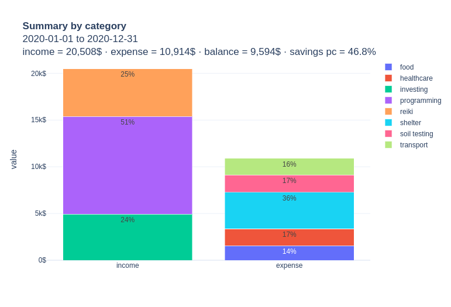

mustaching 4.0.4 Documentation¶
Introduction¶
A tiny Python 3.9+ library inspired by Mr. Money Mustache to summarize and plot personal finance data given in a CSV file of transactions. Uses Pandas and Plotly to do most of the work.
{kind=link}
Smacks of plain text accounting but is limited to single-entry transactions and focuses only on income and expenses. For full-featured double-entry bookkeeping in Python, use a different library, such as beancount.
Installation¶
Create a Python 3.9+ virtual environment and run poetry add mustaching.
Usage¶
Play with the Jupyter notebook at notebooks/examples.ipynb.
You can even do so online by clicking the Binder badge above.
Using Binder you can also upload your own transaction data into the notebook, but consider first Binder’s warning about private data.
Your CSV of transactions should contain at least the following columns
'date': string; something consistent and recognizable by Pandas, e.g 2016-11-26'amount': float; amount of transaction; positive or negative, indicating an income or expense, respectively'description'(optional): string; description of transaction, e.g. ‘dandelion and burdock tea’'category'(optional): string; categorization of description, e.g. ‘healthcare’'comment'(optional): string; comment on transaction, e.g. ‘a gram of prevention is worth 16 grams of cure’
The business logic can be found in mustaching/main.py
Documentation¶
Notes¶
Development status: Alpha
This project uses semantic versioning
API¶
mustaching.main module¶
- mustaching.main.create_transactions(date1: str, date2: str, freq: str = '12h', income_categories: list[str] = None, expense_categories: list[str] = None) DataFrame¶
Create a DataFrame of sample transactions between the given dates (date strings that Pandas can interpret, such as YYYYMMDD) and at the given Pandas frequency. The columns will be all those readable by the function
read_transactions(). Each positive transaction will be assigned a income category from the given listincome_categories, and each negative transaction will be assigned a expense category from the given listexpense_categories. If these lists are not given, then whimsical default ones will be created.
- mustaching.main.insert_repeating(transactions: DataFrame, amount: float, freq: str, description: str = None, category: str = None, comment: str = None, start_date: str = None, end_date: str = None) DataFrame¶
Given a DataFrame of transactions, add to it a repeating transaction at the given frequency for the given amount with the given optional description, category, and comment. Restrict the repeating transaction to the given start and end dates (date objects), inclusive. If no start date is given, then repeat from the first transaction date. If no end date is given, then repeat to the last transaction date. Drop duplicate rows and return the resulting DataFrame.
- mustaching.main.interleave(a: list, b: list) list¶
Given two lists a_0, a_1,…,b_n and b_0, b_1,…,b_n of length n, return the interleaved list a_0, b_0, a_1, b_1,…,a_n, b_n of length 2n.
- mustaching.main.make_title(summary: DataFrame, header: str = None, currency: str = None) str¶
Helper function for
plot(). Given a summary of the form output by the functionsummarize(), return a string with the given header and currency and a summary basic summary of transactions, which acts as a title for plot.
- mustaching.main.plot(summary: DataFrame, currency: str = None, height: int = None) dict¶
- mustaching.main.read_transactions(path: str, date_format: str = None, **kwargs) DataFrame¶
Read a CSV file of transactions located at the given path (string or Path object), parse the date and category, and return the resulting DataFrame.
The CSV should contain at least the following columns
'date': string'amount': float; amount of transaction; positive or negative, indicating a income or expense, respectively'description'(optional): string; description of transaction, e.g. ‘dandelion and burdock tea’'category'(optional): string; categorization of description, e.g. ‘healthcare’'comment'(optional): string; comment on transaction, e.g. ‘a gram of prevention is worth 62.5 grams of cure’
If the date format string
date_formatis given, e.g'%Y-%m-%d', then parse dates using that format; otherwise use let Pandas guess the date format.
- mustaching.main.summarize(transactions: DataFrame, freq: str = 'MS', decimals: int = 2, start_date: str = None, end_date: str = None) dict¶
Given a DataFrame of transactions, slice it from the given start date to and including the given end date date (strings that Pandas can interpret, such as YYYYMMDD) if specified, drop unused categories, and return a dictionary with the keys ‘by_none’, ‘by_period’, ‘by_category’, ‘by_category_and_period’ whose corresponding values are DataFrames with the following columns.
- key “by_none”
"start_date": first transaction date"end_date": last transaction date"income": sum of positive transaction amounts for the date range"expense": absolute value of sum of negative transaction amounts for the date range"balance": income - expense"savings_pc": 100 * balance / income
- key “by_period”
"date": date of period after date range has been resampled at frequencyfreq"income": sum of positive transaction amounts for the period"expense": absolute value of sum of negative transactions for the period"balance": income - expense for the period"savings_pc: 100 * balance / income"cumulative_income": income plus the incomes of all previous periods"cumulative_balance": balance plus the balances of all previous periods"cumulative_savings_pc": 100 * cumulative_balance / cumulative_income
- key “by_category”
"category": category of transactions"income": sum of positive transaction amounts for the category and date range"expense": absolute value of sum of negative transaction amounts for the category and date range"balance": income - expense"income_to_total_income_pc": 100 * income / (total income for date range)"expense_to_total_income_pc": 100 * expense / (total income for date range)"expense_to_total_expense_pc": 100 * expense / (total expense for date range)"daily_avg_balance": sum of all amounts for category divided by the number of days in the date range"weekly_avg_balance": sum of all amounts for category divided by the number of weeks in the date range"monthly_avg_balance": sum of all amounts for category divided by the number of months in the date range"yearly_avg_balance": sum of all amounts for category divided by the number of years in the date range
- key “by_category_and_period”
"date": date of period after date range has been resampled at frequencyfreq"category": category of transactions"income": sum of positive transaction amounts for the period and category"expense": absolute value of sum of negative transactions for the period and category"balance": income - expense for the period and category"income_to_period_income_pc": 100 * income / (total income for period)"expense_to_period_income_pc": 100 * expense / (total income for period)"expense_to_period_expense_pc": 100 * expense / (total expense for period)
Round all values to the given number of decimals, or set
decimals=Noneto avoid rounding.
- mustaching.main.validate_transactions(transactions: DataFrame) DataFrame¶
Raise a Pandera SchemaError if the given DataFrame of transactions does not agree with the schema :const:SCHEMA. Otherwise, return the DataFrame as is.